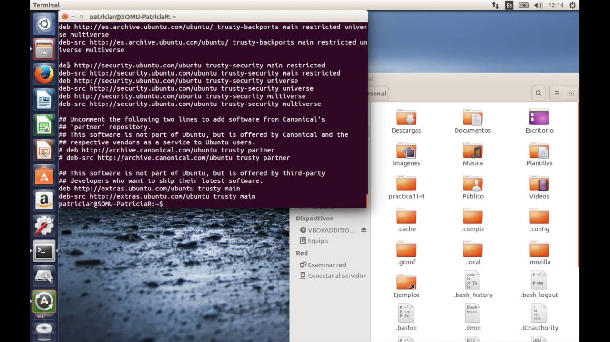
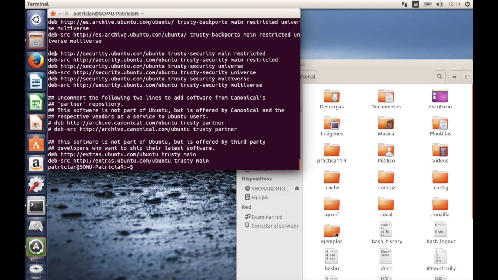

- ¿Qué es un sistema de gestión de archivos?
- Enumera alguna de las aplicaciones para la gestión de archivos.
- ¿Puede usarse Google Drive para la gestión de archivos? ¿Por qué?
- ¿Qué es Dropbox? ¿Para qué sirve?
Un sistema de gestión de archivos es el software que proporciona a los usuarios y aplicaciones de servicios para el uso, acceso y control de accesos, tanto de archivos como a directorios.
 

Explorer ++ o Total Commander son algunos ejemplos de gestores de arrchivos
Si , pero solo para gestionar los archivos que tengamos almacenados en el
Dropbox es un servicio de alojamiento de archivos multiplataforma en la nube. El servicio permite a los usuarios almacenar y sincronizar archivos en línea y entre ordenadores y compartir archivos y carpetas con otros usuarios .